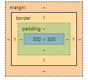
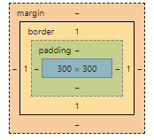
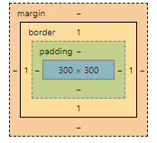

Даны картинки. Привяжите к каждой картинке событие, чтобы по клику на картинку алертом выводился ее src

Даны ссылки. Привяжите всем ссылкам событие - по наведению на ссылку в атрибут title запишется ее текст
123
Привяжите всем ссылкам событие - по наведению на ссылку в конец ее текста дописывается ее href в круглых скобках
+
Дополните предыдущую задачу: после первого наведению на ссылку следует отвязать от нее событие, которое добавляет href в конец текста.
123
Привяжите всем инпутам следующее событие - по потери фокуса каждый инпут выводит свое value в абзац с id="test".
Для всех инпутов сделайте так, чтобы они выводили свой value алертом при нажатии на любой из них, но только по первому нажатию. Повторное нажатие на инпут не должно вызывать реакции
Даны абзацы с числами. По нажатию на абзац в нем должен появится квадрат числа, которое он содержит.
2
s
4
Даны инпуты. Сделайте так, чтобы все инпуты по потери фокуса проверяли свое содержимое на правильное количество символов. Сколько символов должно быть в инпуте, указывается в атрибуте data-length. Если вбито правильное количество, то граница инпута становится зеленой, если неправильное - красной.
Даны дивы. По первому нажатию на каждый див он красится красным фоном, по второму красится обратно и так далее каждый клик происходит чередование фона. Сделайте так, чтобы было две функции: одна красит в красный цвет, другая в зеленый и они сменяли друг друга через removeEventListener.
 
